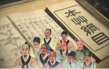
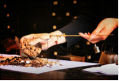

中医（Traditional Chinese Medicine），一般指以中国汉族劳动人民创造的传统医学为主的医学，所以也称汉医。是研究人体生理、病理以及疾病的诊断和防治等的一门学科。
中医诞生于原始社会，春秋战国时期中医理论已基本形成，之后历代均有总结发展。除此之外对汉字文化圈国家影响深远，如日本汉方医学，韩国韩医学，朝鲜高丽医学、越南东医学等都是以中医为基础发展起来的。
中医承载着中国古代人民同疾病作斗争的经验和理论知识，是在古代朴素的唯物论和自发的辨证法思想指导下，通过长期医疗实践逐步形成并发展成的医学理论体系。
中医学以阴阳五行作为理论基础，将人体看成是气、形、神的统一体，通过“望闻问切”四诊合参的方法，探求病因、病性、病位、分析病机及人体内五脏六腑、经络关节、气血津液的变化、判断邪正消长，进而得出病名，归纳出证型，以辨证论治原则，制定“汗、吐、下、和、温、清、补、消”等治法，使用中药、针灸、推拿、按摩、拔罐、气功、食疗等多种治疗手段，使人体达到阴阳调和而康复。
中医治疗的积极面在于希望可以协助恢复人体的阴阳平衡，而消极面则是希望当必须使用药物来减缓疾病的恶化时，还能兼顾生命与生活的品质。


中医，即相对西医而言。在西方医学没有流入中国以前，中医基本不叫中医这个名字，而是有独特且内涵丰富的称谓。
中医产生于原始社会，春秋战国中医理论已经基本形成，出现了解剖和医学分科，已经采用“四诊”，治疗法有砭石、针刺、汤药、艾灸、导引、布气、祝由等。自古以来就有“医道相通”的说法。这种影响最早可以追溯到黄老道家的典籍——《黄帝内经》，它是中国传统医学四大经典著作，也是我国医学宝库中成书最早的一部医学典籍。同时是研究人的生理学、病理学、诊断学、治疗原则和药物学的医学巨著。在理论上建立了中医学上的“阴阳五行学说”、“脉象学说”“藏象学说”、“[1] 经络学说”、“病因学说”“病机学说”、“病症”、“诊法”、论治及“养生学”、“运气学”等学说，后来的中医学和养生学则在先秦道家思想的基础上，开始用阴阳五行解释人体生理，出现了“医工”，金针，铜钥匙等。东汉出现了著名医学家张仲景，[1] 他已经对“八纲”（阴阳
、表里、虚实、寒热）有所认识，总结了“八法”。华佗则以精通外科手术和麻醉名闻天下，还创立了健身体操“五禽戏”。唐代孙思邈总结前人的理论并总结经验，收集5000多个药方，并采用辨证治疗，因医德最高，被人尊为“药王”。唐朝以后，中国医学理论和著作大量外传到高丽、日本、中亚、西亚等地。两宋时期，宋政府设立翰林医学院，医学分科接近完备，并且统一了中国针灸由于传抄引起的穴位紊乱，出版《图经》。金元以降，中医开始没落。明清以后，出现了温病派时方派，逐步取代了经方派中医。在明朝后期成书的李时珍的《本草纲目》标志着中药药理学没落。同一时期，蒙医、藏医受到中医的影响。在朝鲜东医学也得到了很大的发展，例如许浚撰写了《东医宝鉴》。